모드는 훅과 무엇이 다른가요
클로드 코드에 모드(Mods)라는 기능이 새로 들어왔어요. 이름 그대로 클로드 코드를 내 마음대로 개조하는 기능이에요. 화면에 패널을 붙이고, 버튼을 만들고, 클로드가 일하는 동안 게임을 하는 사람도 있어요.
지금까지도 클로드 코드는 꽤 많은 걸 바꿀 수 있었어요. 설정을 고치고, 스킬을 넣고, 상태줄을 꾸밀 수 있었죠. 하지만 전부 클로드 코드가 열어 둔 범위 안에서였어요. 모드는 클로드 코드가 원래 하던 동작 자체를 바꾸거나, 화면에 새 UI(User Interface)를 직접 그릴 수 있어요.
훅은 한 번, 모드는 세션 내내
가장 많이 헷갈리는 건 훅과의 차이예요. 아래 그림 위쪽 점선이 훅이에요. SessionStart, PreToolUse, PostToolUse, Stop 같은 순간마다 체크 표시가 하나씩 찍히고, 가운데에 '1회 실행 → 끝'이라고 적혀 있어요. 아래쪽 실선이 모드예요. 선이 끊기지 않고 이어지고, 오른쪽 끝에 '기억 3' 카드가 붙어 있어요.
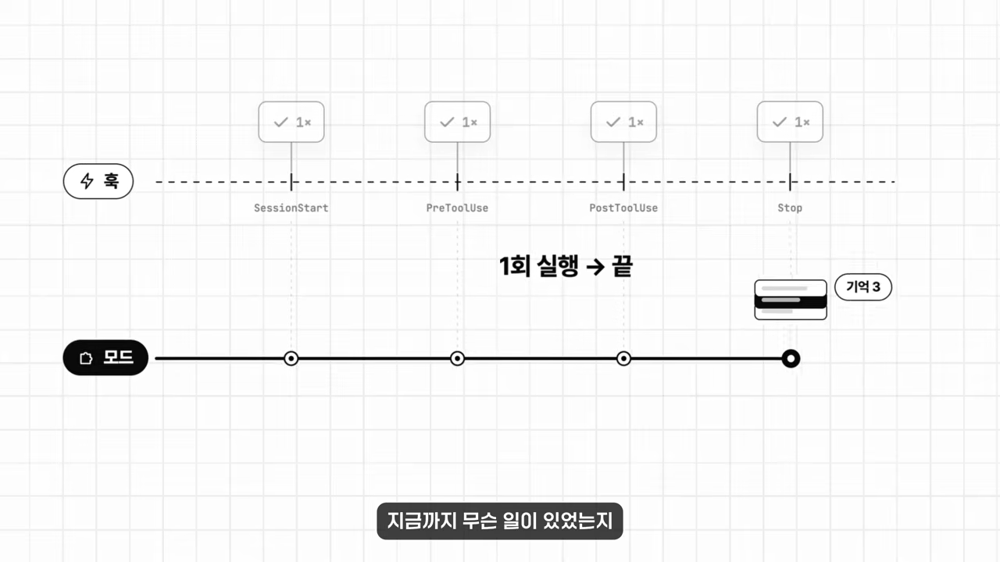
모드는 살아 있는 동안 화면에도 손을 댈 수 있어요. 다음 그림은 클로드 코드 창 오른쪽에 '사이드 패널'이 붙고, 위쪽에 '버튼'이 생기고, 입력창에 /memo /quiz /next 같은 '새 명령어'가 뜨는 모습을 보여 줘요. 왼쪽에서 들어오는 선 끝에는 '기억 4'가 달려 있어요.
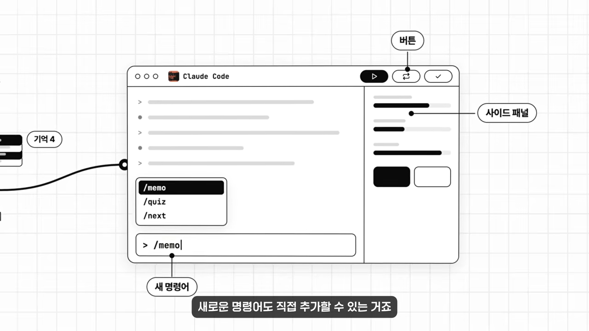
영상이 말한 차이를 표로 모으면 이래요.
| 훅 | 모드 | |
|---|---|---|
| 언제 도나요 | 정해진 순간이 올 때마다 한 번 | 세션이 켜져 있는 동안 계속 |
| 기억 | 실행이 끝나면 사라져요 | 지금까지 있었던 일을 기억해요 |
| 화면 | 건드리지 못해요 | 사이드 패널, 버튼, 새 명령어를 만들어요 |
말로 만들고, 플러그인으로 남겨요
모드는 원래 코드로 짜는 거지만 코드를 몰라도 돼요. 클로드 코드를 켜고 원하는 모드를 말로 설명하면 끝이에요. 최신 버전이면 따로 켤 필요도 없이 기본으로 켜져 있어요.
말로 만들고 말로 고쳐요
발표자는 '프롬프트 창 위에 지금 컨텍스트를 얼마나 썼는지 한 줄로 보여 주는 모드 만들어줘'라고 요청했어요. 화면을 보면 클로드가 먼저 plugin-authoring 스킬을 불러오고, 작업 끝에 context-band라는 모드를 만들었다고 알려요. 맨 아래에 실제로 'Context 9% 86k / 1M tokens' 막대가 떠 있고, 입력창에는 다음 수정 요청('비율 말고 남은 토큰 수도 보여줘')이 적히고 있어요.
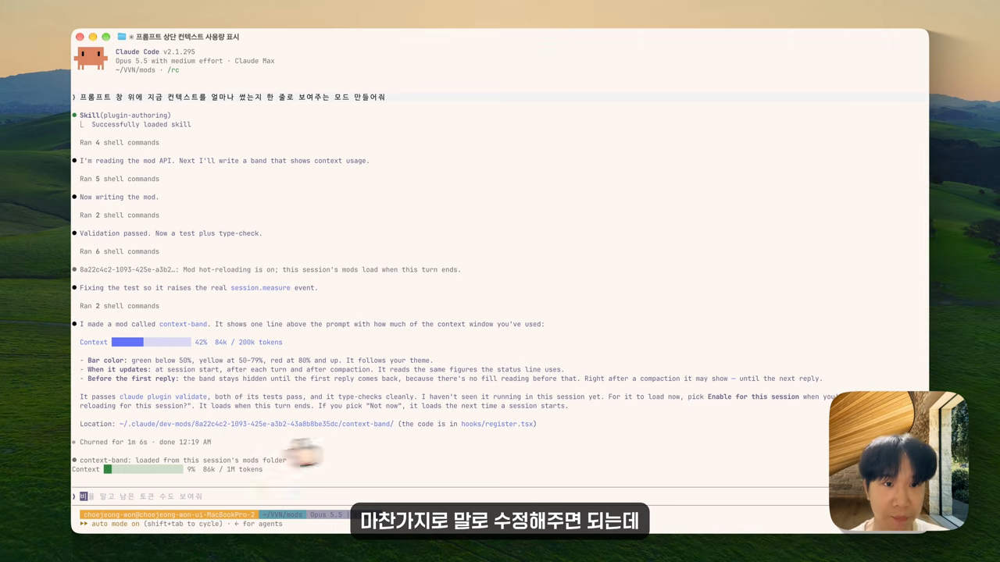
마음에 안 들면 다시 말로 고쳐 달라고 하면 돼요. 핫 리로드 덕분에 껐다 켤 필요 없이 그 자리에서 바뀐 모습을 볼 수 있어요. 영상은 이 과정을 설명, 수정 요청, 반복 세 칸이 도는 고리로 그려요.
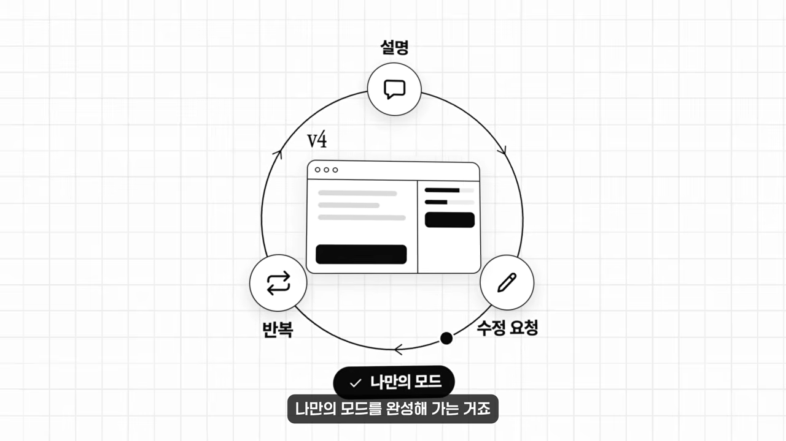
세션 밖에서도 쓰려면 플러그인으로
이렇게 만든 모드는 이번 세션에서만 돌아가요. 계속 쓰고 싶으면 플러그인으로 설치해 달라고 하면 돼요. 흐름을 한 장으로 그리면 이래요.
flowchart LR A["말로 설명"] --> B["핫 리로드 허용"] B --> C["화면에 바로 뜸"] C -->|"마음에 안 들면"| D["말로 수정 요청"] D --> C C --> E["이번 세션에서만 동작"] E -->|"계속 쓰려면"| F["플러그인으로 설치"]
남의 모드는 믿을 수 있는 것만
남이 만든 모드도 플러그인처럼 설치해서 쓸 수 있어요. 발표자가 띄운 안내 페이지의 '모드 공유하기' 부분을 보면, 세 줄짜리 명령이 나와요. 마켓플레이스를 추가하고, 모드를 설치하고, 플러그인을 다시 불러오는 순서예요.
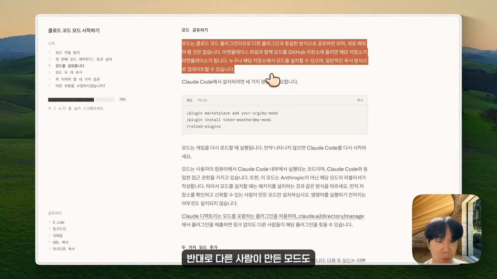
/plugin marketplace add your-org/my-mods
/plugin install token-weather@my-mods
/reload-plugins그래서 믿을 수 있는 코드만 설치하는 게 중요해요. 출시된 지 얼마 안 됐는데도 벌써 다양한 모드가 올라오고 있어요. 클로드가 일하는 동안 게임을 하는 모드도 있고, Anthropic이 공식 예제로 내놓은 Blast Radius도 있어요. 아래 화면에서 Blast Radius는 rm -rf build를 실행하기 전에 멈추고, 지워질 파일 9개(1.1 MB) 목록을 보여 준 뒤 Proceed와 Cancel 중에서 고르게 해요.
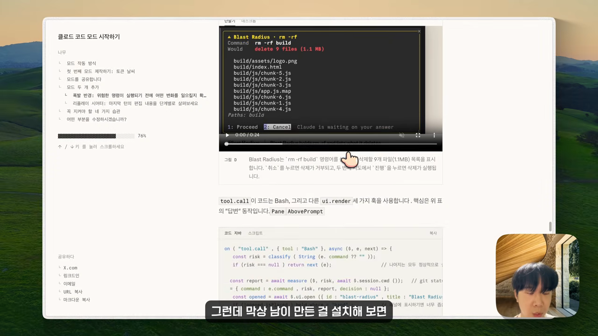
이런 걸 둘러보면 모드로 무엇이 가능한지 감이 잡혀요. 하지만 남이 만든 걸 막상 깔아 보면 내 작업에는 안 맞을 때가 있어요. 그래서 발표자는 자기 작업 방식에 맞춰 모드 네 개를 직접 만들었어요. 다음 섹션부터 하나씩 볼게요.
제어센터: 자주 보는 것을 한곳에
처음 보여 준 건 제어센터예요. 아이폰에서 화면을 쓸어내리면 나오는 제어센터처럼, 자주 확인하는 것과 자주 누르는 버튼을 한곳에 모은 모드예요.
요청문을 보면 무엇을 넣을지 네 줄로 정리돼 있어요. 상태(컨텍스트·5시간·주간 사용량), 진행(할 일 목록 기준 진행바), 모델(모델과 추론 값 전환 버튼), 음악(Claude FM(Frequency Modulation) 재생·정지)이에요. 디자인은 애플처럼 미니멀하게, 흑백 바탕에 클로드 주황색만 쓰고 이모지는 쓰지 말라고 했어요. 터미널에서는 리퀴드 글래스 같은 효과를 낼 수 없어서 고른 방향이에요.
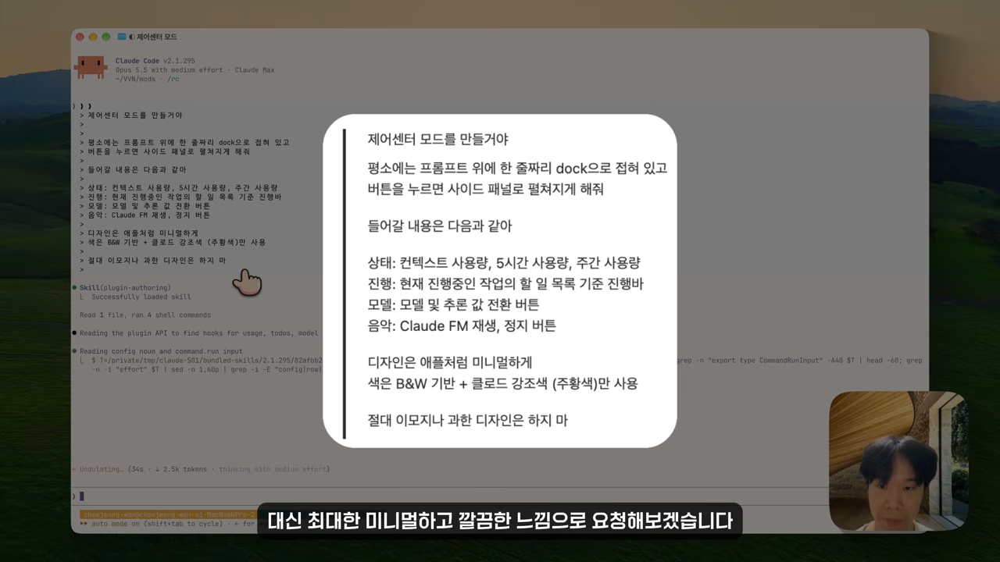
사용량을 한눈에
완성된 제어센터는 평소 프롬프트 위에 한 줄로 떠 있다가, 버튼을 누르면 옆에서 펼쳐져요. 패널 맨 위가 사용량이에요. 아래 확대 화면에서 첫 막대는 '123k of 1.0M tokens'로 컨텍스트 12%, 둘째는 '05:10에 초기화'되는 5시간 한도 1%, 셋째는 '목요일 12:00에 초기화'되는 주간 한도 2%예요.
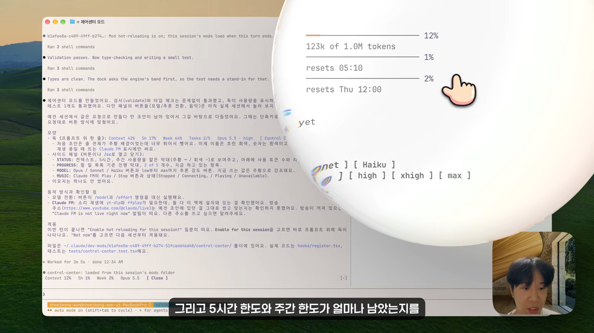
진행바는 체크리스트를 기준으로
그 아래가 진행바예요. 여기서 발표자가 한 가지를 짚어요. 클로드 코드는 지금 작업이 전체의 몇 %인지 스스로 알지 못해요. 그림에서 막대 위의 '23%? 38%? 61%?'가 흐릿하게 지워지고 끝에 '??%'가 남는 게 그 뜻이에요. 그래서 클로드가 작업 전에 만드는 체크리스트를 기준으로 삼았어요.
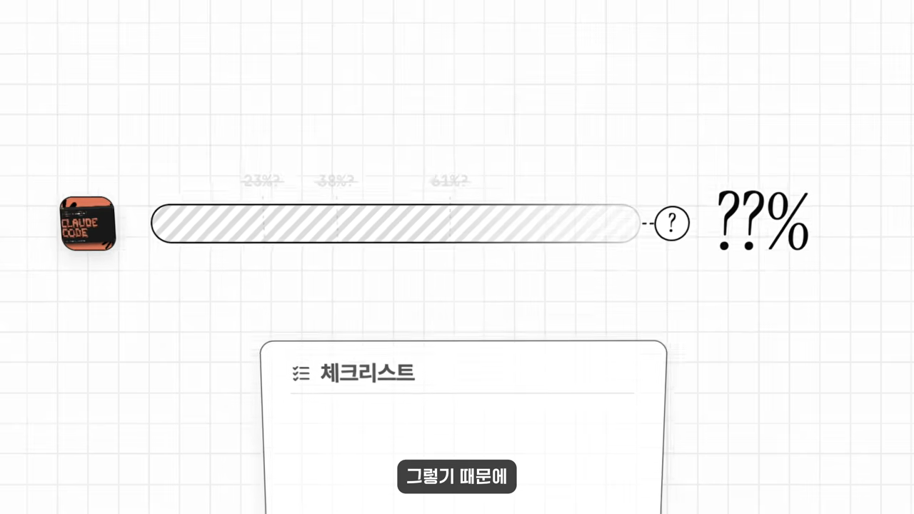
예시 작업으로 확인해 볼게요. 왼쪽 대화에서 클로드가 hello.txt 만들기, 한 줄 쓰기, 다시 읽어서 확인, 삭제 네 단계를 체크리스트로 만들고 Progress 1/4 → 4/4로 하나씩 끝내요. 오른쪽 패널의 PROGRESS 막대는 'Tasks 4 of 4'로 끝까지 찼어요.
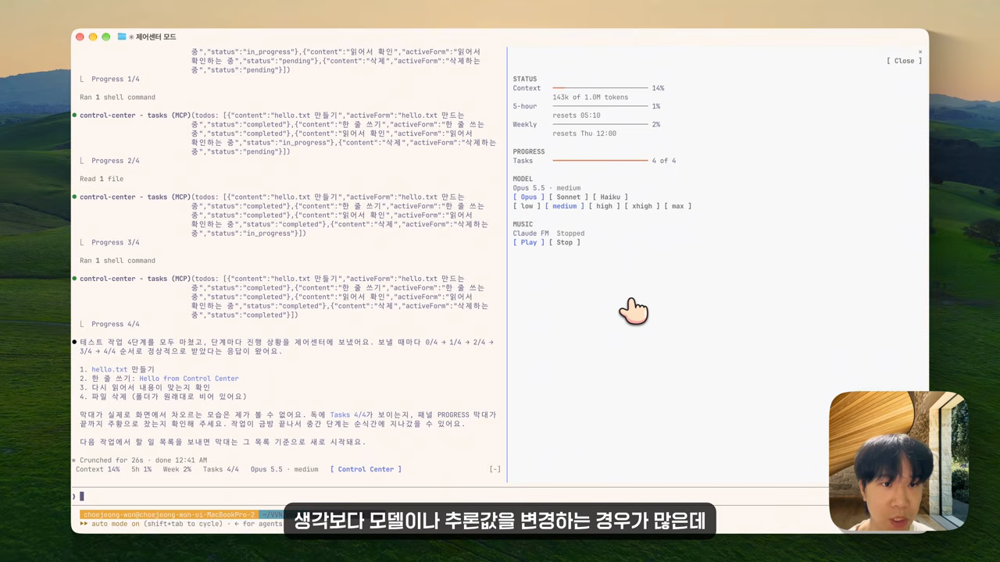
모델 변경 버튼과 음악
작업하다 보면 모델이나 추론 강도를 생각보다 자주 바꿔요. 패널의 MODEL 구역에는 Opus, Sonnet, Haiku 버튼과 low부터 max까지 추론 강도 버튼이 있어요. 아래 화면은 Sonnet 버튼을 누른 뒤 '지금 무슨 모델이야?'라고 물은 결과예요. 'Set model to Sonnet 5.5'가 찍히고, 클로드가 지금은 Sonnet 5.5라고 답해요.
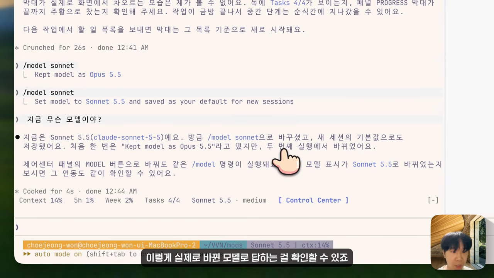
마지막은 발표자가 가장 아끼는 음악 버튼이에요. 유튜브의 Claude 공식 채널에 Claude FM이라는 라이브가 있어요. 화면 가운데 썸네일에 'Claude FM — music for thinking and building'이 보여요. 패널의 재생 버튼을 누르면 이 라이브가 바로 흘러나오게 해 뒀어요.
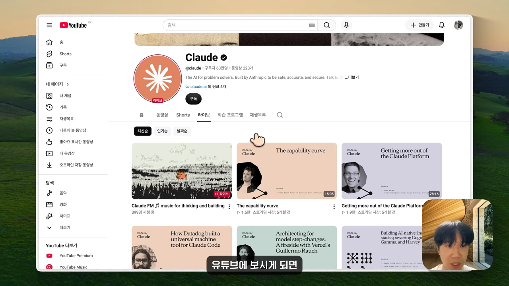
네 구역을 정리하면 이래요.
| 구역 | 보여 주는 것 | 할 수 있는 것 |
|---|---|---|
STATUS | 컨텍스트, 5시간 한도, 주간 한도 | 남은 양과 초기화 시각 확인 |
PROGRESS | 체크리스트 기준 진행 막대 | 지금 작업이 어디까지 왔는지 확인 |
MODEL | 현재 모델과 추론 강도 | Opus·Sonnet·Haiku, low~max 전환 |
MUSIC | Claude FM 재생 상태 | 재생·정지 |
자주 확인하는 걸 한곳에 모아 두니, 다른 창으로 넘어가지 않고 훨씬 쾌적하게 작업할 수 있다는 게 발표자의 평가예요.
기다리는 시간 쓰기: 메모장과 듀오클로드
클로드 코드를 쓰다 보면 클로드가 일하는 동안 그냥 기다리는 시간이 꽤 길어요. 그 사이에 다음에 뭘 시킬지 미리 생각하는 경우도 많죠. 다음 두 모드는 이 시간을 겨냥했어요.
메모장: 다음 요청을 미리 적어 둬요
첫째는 옆에 붙인 메모장이에요. /memo를 치면 오른쪽 패널이 열리고, 클로드가 작업하는 동안 다음 요청을 적어 둘 수 있어요. 화면 오른쪽에 '다크모드 만들어줘'라는 메모와 Send, Clear 버튼, '1 lines ready' 표시가 보여요.
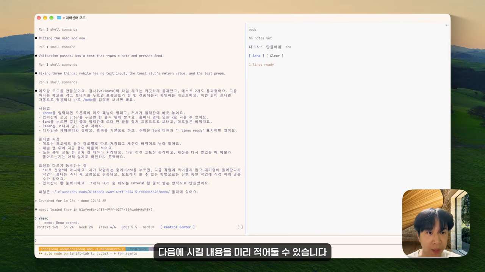
왼쪽 설명에는 하나 눈여겨볼 게 있어요. 클로드가 작업 중에 Send를 누르면 진행 중인 작업에 끼어들지 않고 대기열에 들어갔다가, 작업이 끝나면 새 요청으로 보내진다고 적혀 있어요. 별거 아닌 것 같아도 기다리는 시간을 훨씬 알차게 쓰게 해 줘요.
듀오클로드: 작업에서 나온 단어로 영어 퀴즈
한 단계 더 나아가, 기다리는 시간에 뭔가를 배울 수 있게 한 게 듀오클로드예요. 이름처럼 듀오링고와 클로드를 합친 모드예요. 요청문은 세 줄이에요. 클로드가 작업을 시작하면 옆 패널에 영어 퀴즈를 띄우고, 듀오링고처럼 객관식으로 풀게 하고, 문제는 지금 작업에 나온 영어 단어나 개발 용어로 만들라는 거예요.
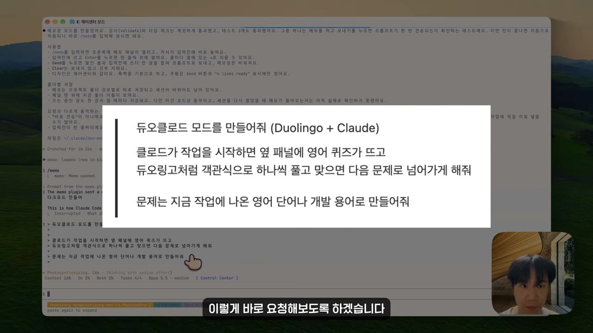
작업을 하나 맡기면 옆에 퀴즈가 바로 떠요. 아래 화면 오른쪽은 5문제 중 2번, ''deprecated'의 뜻은?'이에요. 답 1번 '더 이상 권장되지 않는, 지원 중단 예정인'이 골라져 있고, 위에 streak 1, xp 10이 보여요. 왼쪽 대화를 보면 방금 작업에서 fallback과 deprecated라는 말이 실제로 나왔어요.
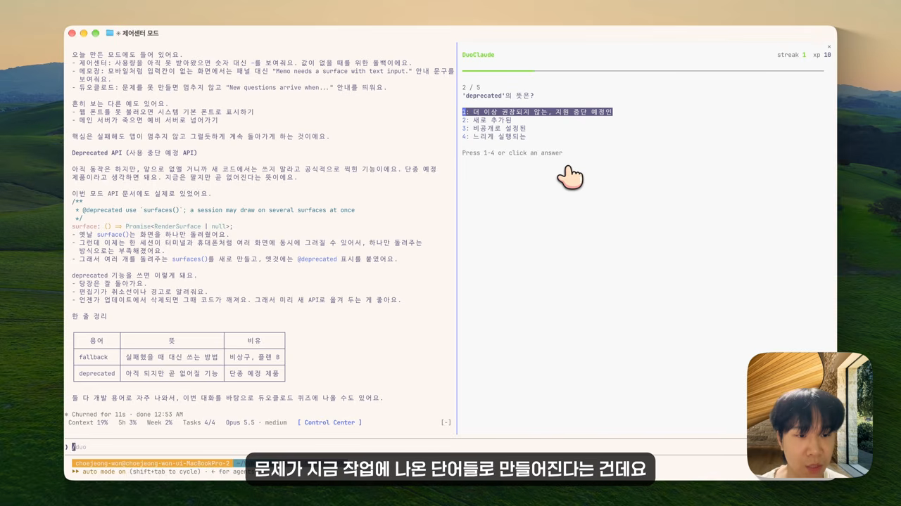
퀴즈를 만드는 데 드는 토큰은 거의 신경 쓰지 않아도 될 만큼 적다고 해요. 발표자는 게임과 비교해요. 아래 그림 위쪽은 게임 썸네일 옆에 빗금 막대와 '즐거운 시간', 아래쪽은 듀오링고 부엉이와 클로드 로고 옆에 fallback, deprecated, API 단어 칩이 들어간 막대와 '남는 시간'이에요.
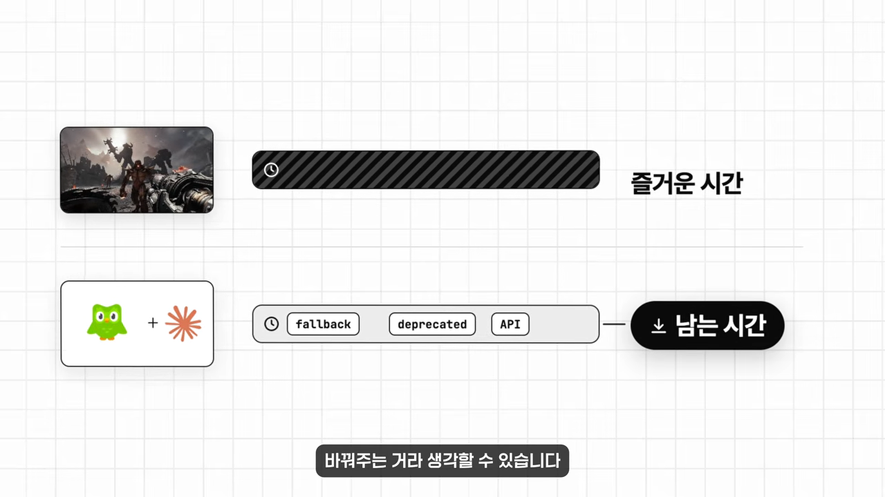
다음 작업 추천, 그리고 결론
마지막 모드는 다음 작업 추천이에요. 작업이 하나 끝나면 그다음에 뭘 할지 고민하게 되잖아요. 그래서 작업이 끝날 때마다 클로드가 다음에 할 만한 작업을 버튼으로 띄우게 했어요.
클로드가 정리한 동작 방식을 보면 조건이 분명해요. 작업 중에 파일 수정(Edit, Write, MultiEdit, NotebookEdit)이 실제로 성공했는지 지켜보다가, 정상적으로 끝났고 수정한 파일이 있을 때만 추천을 띄워요. 읽기만 한 작업, 중간에 끊은 작업, 오류로 끝난 작업에는 뜨지 않아요. 예시로 'Next / Hide' 아래 '1 테스트 실행해줘', '2 README 업데이트해줘'가 적혀 있어요.
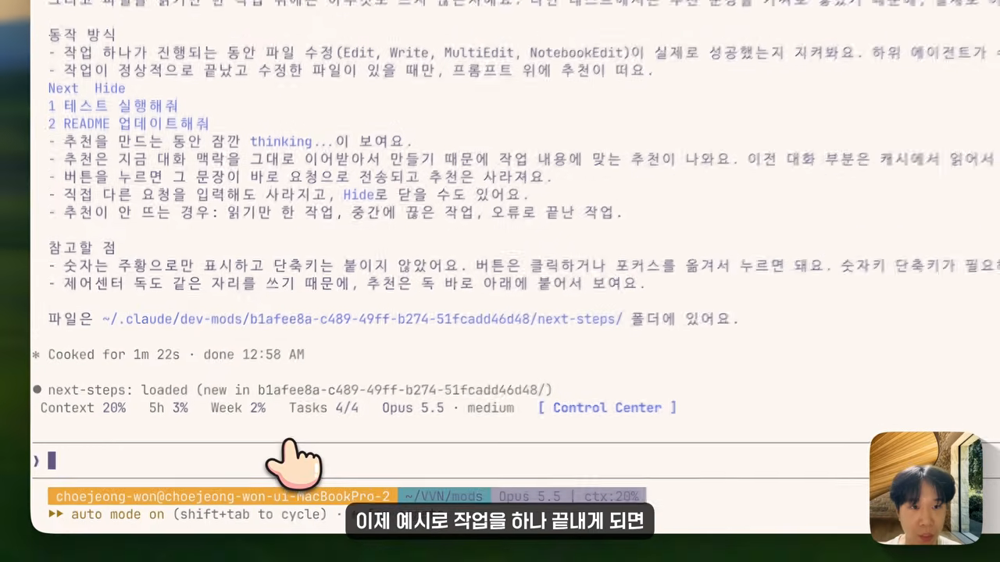
이 조건을 흐름으로 그리면 이래요. 모든 값은 위 화면에 적힌 그대로예요.
flowchart LR
A["작업 끝"] --> B{"파일을 수정했고
정상 종료했나요?"}
B -->|"예"| C["다음 작업 버튼 표시"]
B -->|"아니요 (읽기만, 중단, 오류)"| D["아무것도 안 띄움"]
C --> E["버튼 클릭 → 바로 다음 요청"]
실제로 '이 폴더에 hello.txt 파일 하나 만들어줘'를 시키면, 작업 끝에 Next 아래로 추천 세 개가 떠요. 'hello.txt 파일 삭제해줘', 'hello.txt에 오늘 날짜 한 줄 추가해줘', 'next-steps 추천에 숫자키 단축키 붙여줘'예요. 새 작업을 권하거나 관련 기능을 고치는 것처럼 지금 흐름에 이어지는 것들이에요.
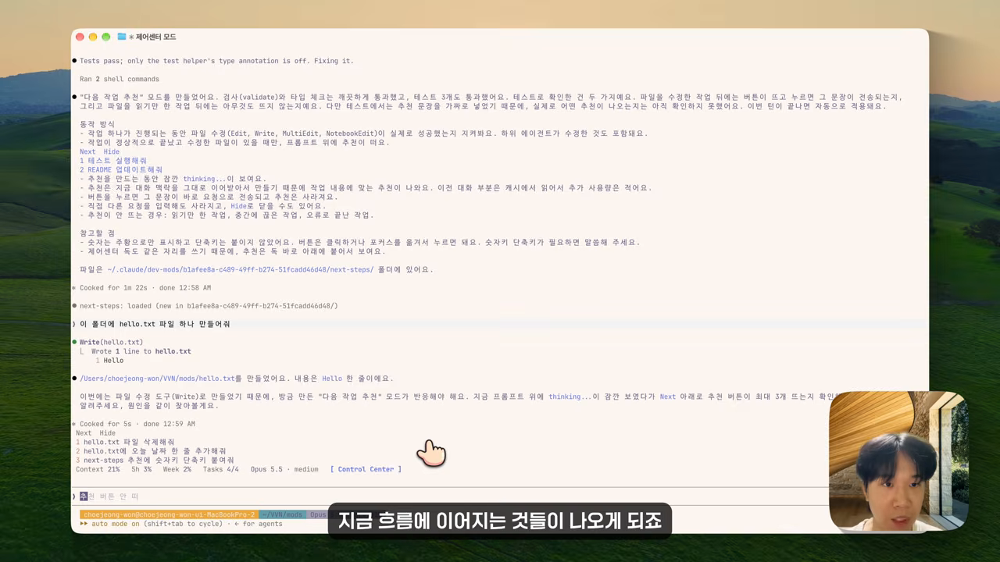
파일을 수정한 작업에만 추천을 붙인 이유도 말해요. 그냥 묻고 답하는 대화에서까지 매번 추천이 뜨면 오히려 거슬리기 때문이에요. 발표자는 이렇게 불편한 부분을 조건 하나로 바로 고칠 수 있다는 게 직접 만든 모드의 가장 큰 장점이라고 봐요.
남이 만든 멋진 모드보다 내 불편 하나
발표자는 영상을 준비하면서 남들이 만든 모드를 정말 많이 살펴봤다고 해요. 화려하고 신기한 건 많았지만, 정작 자기 작업에 도움이 될 만한 건 거의 없었대요. 반대로 오늘 보여 준 모드는 전부 실제 니즈에서 시작했어요. 마지막 그림이 이 대비를 보여 줘요. 왼쪽에는 여러 아이콘이 흩어진 '남이 만든 멋진 모드', 오른쪽에는 한가운데를 노리는 과녁이 있어요.
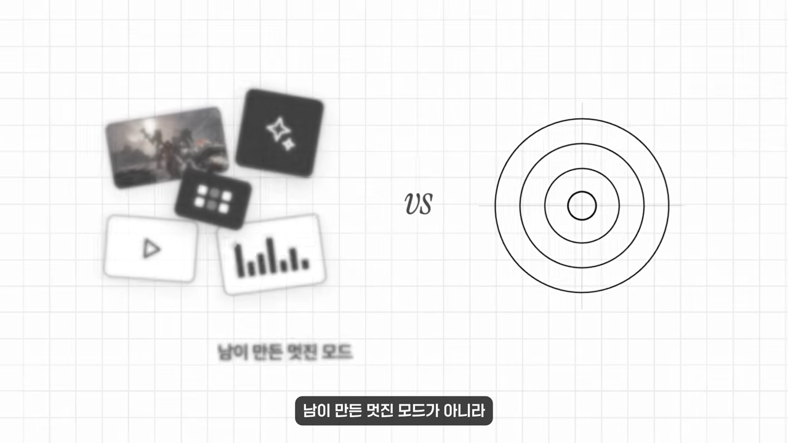
결국 가장 좋은 모드는 남이 만든 멋진 모드가 아니라 나의 불편 하나를 정확하게 해결해 주는 모드라고 생각합니다.
— 영상 08:21
이제는 모드를 만드는 데 코드를 알 필요도 없어요. 작업하다 '이거 좀 불편한데' 싶은 순간이 있다면, 그걸 그대로 클로드에게 설명해서 나만의 모드를 만들어 보라는 게 발표자의 권유예요.